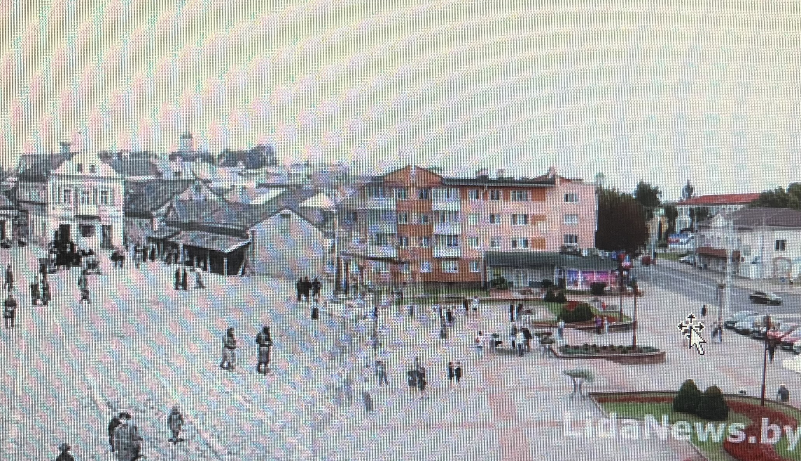
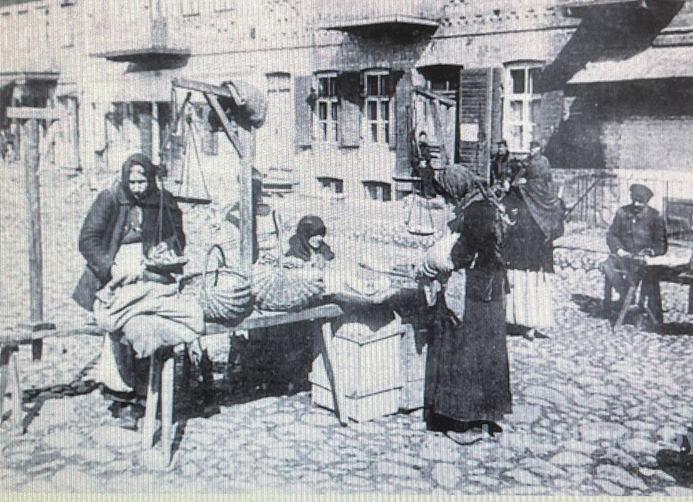
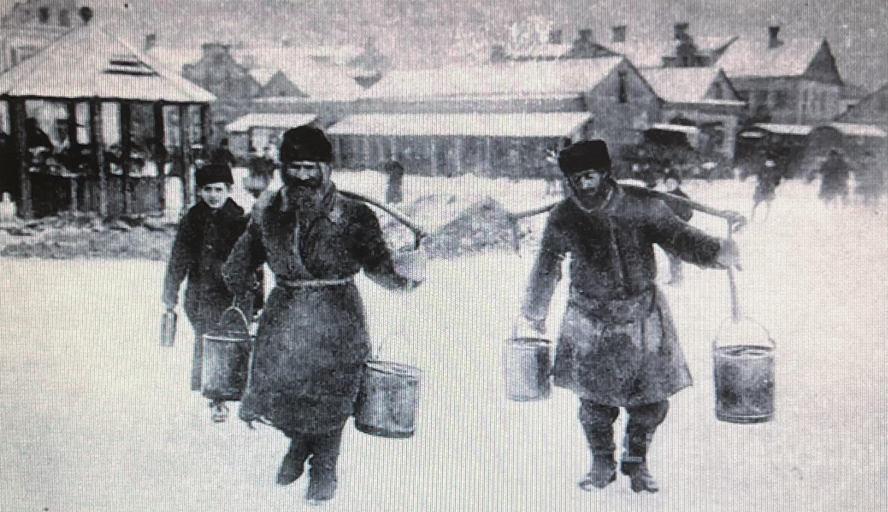
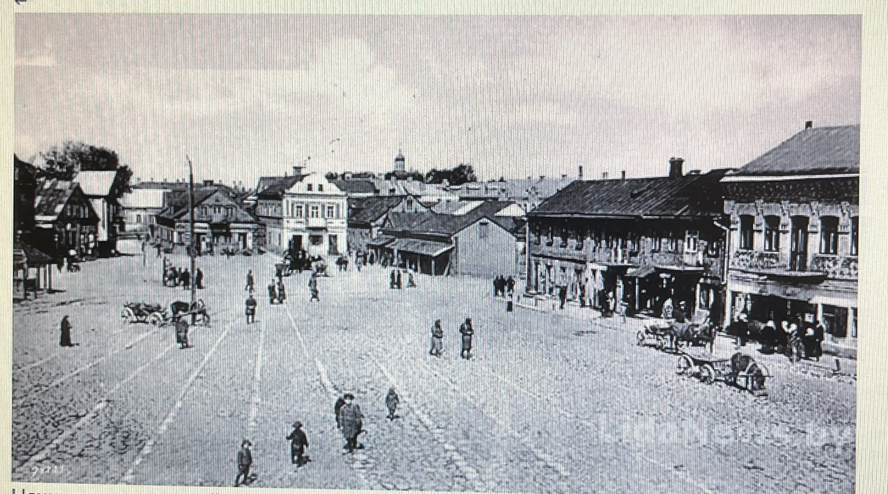

Древняя Лида

У нашего города богатая история, и ее бережно хранят в Лидском историко-художественном музее. Здесь находится порядка 55 тысяч артефактов. В числе уникальных предметов – старинные фотографии с изображением города Лиды. Снимки достоверно отражают архитектуру города начала XX века и переносят нас, современников, в атмосферу минувших дней. Серия хранящихся в музее фотографий посвящена рыночной площади. Располагалась она в районе ныне существующей площади по улице Советской.
Лида в прошлом

На снимках запечатлены яркие сцены уличной торговли. Детально рассмотрев их, можно увидеть, чем именно торговали крестьяне, как выглядели их прилавки. Это не просто фотографии, а реалистичные картины, рассказывающие о жизни людей, их труде и быте. Как пишут лидские краеведы Валерий и Наталья Сливкины в книге «История Рыночной площади г. Лиды в фотографиях», рынок в Лиде существовал от начала строительства замка. В XIV-XV столетиях он располагался с северной стороны от замка. А рыночная площадь возникла в начале XVII столетия. Она была обустроена в самой широкой части междуречья Лидейки и Каменки (в пределах современной площади Ленина) и там оставалась до 1941 г. Время от времени, в зависимости от принадлежности Лиды тому или иному государству, название менялось: Рынок, Рыночная улица, Базарная площадь. Известно также, что рыночные (базарные) дни в разные времена приходились на разные дни недели. Поначалу лидчане торговали по субботам, с появлением в городе значительной прослойки евреев рыночный день сдвинули на воскресенье. Король Михаил Корибут Вишневецкий в 1670 году вернул торговый день на субботу, затем подвинули на понедельник.

В 1859-1864 гг. еженедельные базары проводились по воскресеньям и понедельникам, в 1929 г. – только по понедельникам, в 1939-1941 гг. – по понедельникам и четвергам. Также в книге «История Рыночной площади г. Лиды в фотографиях» говорится о том, что по традиции в городах, получивших Магдебургское право, рынок оформлялся в виде квадратной площади. В Лиде он занял центральное положение. От него в XVII в. отходили три улицы: Виленская (ныне Советская), выходившая на дорогу в Вильню, Замковая (ныне Советская), которая вела к замку и далее на юг, и Кривая (в наше время не существует), соединявшая рынок с улицей Каменской (теперь Ленинская), которая вела на запад. В XVIII столетии на территории рынка была построена Ратуша и униатская церковь Святого Николая. Рыночная площадь постепенно по периметру застроилась зданиями высотой в один-два этажа, шириной в три-четыре окна. При пожарах 1679 г., 1891 г. деревянные дома вокруг площади сгорели, появились каменные, они были пронумерованы. Нумерация домов начиналась от улицы Виленской по северной стороне площади, далее по периметру. В ночь на 7 октября 1891 г. в огне огромного пожара сгорело 3/5 города (практически вся центральная часть), около 400 жилых домов и 600 хозяйственных построек. По городам Северо-Западного края собирались пожертвования потерпевшим мещанам Лиды. Через шесть лет город полностью восстановился, и в первую очередь – рыночная площадь. Начинается взрывной рост промышленного производства. В 1897 г. в Лиде функционируют 18 фабрик и заводов: две табачных, одна пробковая, две гильзовых, два пивоваренных завода, два кирпичных, четыре кожевенных, три завода шипучих вод, типография, а также скотобойня, несколько водяных мельниц, спиртовое производство. Крупнейшее предприятие – табачно-махорочная фабрика со штатом в 120 рабочих и годовым производством в 200 тысяч рублей. В 1901 г. открылся литейный завод. В 1903 г. завершено строительство механической лесопилки. В 1904 г. в Лиде действовало 14 заводов и фабрик, 170 ремесленных мастерских, 3 типографии, фотоателье. Объем городского производства составлял 1 миллион 200 тысяч рублей. В 1910 г. в Лиде проживает 8 тысяч жителей, работают 54 фабрики и заводы, штат рабочих составляет 614 человек, объем производства – 1,3 миллиона рублей. В 1914 г. в Лиде насчитывается 16 тысяч жителей, 704 зарегистрированных торгово-промышленных предприятия. Работало 6 фабрик, 9 заводов, скотобойня, 4 мельницы, 45 мастерских. Кроме производственных предприятий имелись 2 типографии, 12 гостиниц, 450 всевозможных торговых точек, хлебопекарня, 98 чайных и пивных лавок, трактиров, буфетов, кинозал, парикмахерская, баня, прачечная, банк и банкирская контора, 10 аптек, 2 больницы, 7 учебных заведений. Торговому бизнесу не хватало места на Базарной площади. Торговля вышла за ее пределы, захватила прилегающие улицы. Все первые этажи городских зданий на этих улицах превратились в магазины, лавки, мастерские, чайные, аптеки, парикмахерские. Владельцы домов переселились на вторые этажи, нижние сдавали в аренду. В 1914 г. на Базарной площади было 139 торговых предприятий. На территории между современными улицами Ленинской, Кирова, Советской, проспектом Победы до 1956 г. никаких зданий не было, все было разрушено. В 1956-1958 гг. на месте бывшей Рыночной площади шло строительство Дома офицеров. 31 декабря 1958 г. в 15 часов перед Домом офицеров был отрыт бронзовый памятник В. И. Ленину. С этого момента площадь названа именем Ленина. В 1960-1964 гг. застраивалась окружающая территория. В 1955 г. через дорогу от площади был построен кинотеатр «Октябрь» (ныне ГУ «Лидский районный центр культуры и народного творчества»). В 1957 г. – баня по ул. Ленинской. В 1960-е гг. солдаты строительного батальона строили жилые дома «хрущевки» для офицерского состава. К концу 1960-х гг. площадь приобрела законченный вид. В советский и постсоветский периоды на площади Ленина проводились различные праздненства. Тут проходили новогодние массовые гуляния, парады в честь 9 Мая, а также региональная выставка «Лида-регион», на которую приглашались гости из ближнего и дальнего зарубежья для ознакомления с выпускаемой в районе продукцией и заключения выгодных контрактов.
Лида сегодня
Сегодня Лида — это современный город Гродненской области, который сохраняет свою богатую историю и одновременно развивается как промышленный, культурный и туристический центр. Город расположен на пересечении важных автомобильных и железнодорожных путей, что способствует развитию торговли, промышленности и связям с другими регионами.
Символом города остаётся Лидский замок XIV века — уникальный памятник архитектуры и одно из главных мест притяжения жителей и гостей города. Рядом с историческими достопримечательностями развивается современная городская среда: благоустраиваются улицы, площади и места отдыха.
Важное место в жизни города занимает промышленность. В Лиде работают предприятия различных направлений: пищевой промышленности, машиностроения, химической отрасли, производства строительных материалов и других сфер. Город известен такими предприятиями, как «Лидское пиво», «Лидахлебопродукт», «Лидские автобусы «Неман» и другими организациями, которые вносят вклад в развитие региона.
Современная Лида — это также город образования, культуры и творчества. Здесь работают учреждения образования, музеи, школы искусств, проводятся городские праздники и культурные мероприятия. Особое значение имеет Лидский историко-художественный музей, который сохраняет память о прошлом города и знакомит жителей с его наследием.
Сегодня площадь Ленина остаётся одним из центральных общественных пространств города. Здесь проходят праздничные мероприятия, встречи и городские события. Так прошлое и настоящее соединяются, создавая уникальный облик современной Лиды.